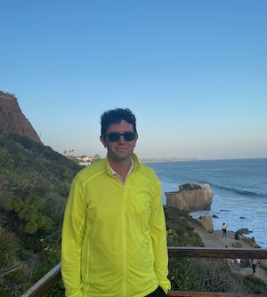

I'm a Postdoctoral Researcher in the Department of Linguistics at Leipzig University. My research focuses on syntax, its interfaces, and morphology from a comparative perspective. The overarching theme of research is investigating whether differences observed between closely related languages and similarities between otherwise unrelated langauges can be explained in terms of non-language specific features of the language faculty. In recent works, one topic I have been investigating concerns how cross-linguistic variation in terms of clausal architecture can lead to differences in syntactic locality domains (i.e. phase domains) with associated surface variation. In addition to my theoretical works, I have an ongoing interest in field research and language documentation and have worked extensive on Uyghur (and Turkic more generally).
Some topics my work has focused on include: cross-linguistic variation in the clausal middle-field, locality domains, differential object marking, ellipsis, PF movement, typology of case and agreement patterns, syntactic variation in cross-clausal dependencies (e.g. ECM).
I completed my PhD in 2026 from the University of Connecticut . Before that I received my BA in philosophy at the University of Toronto .